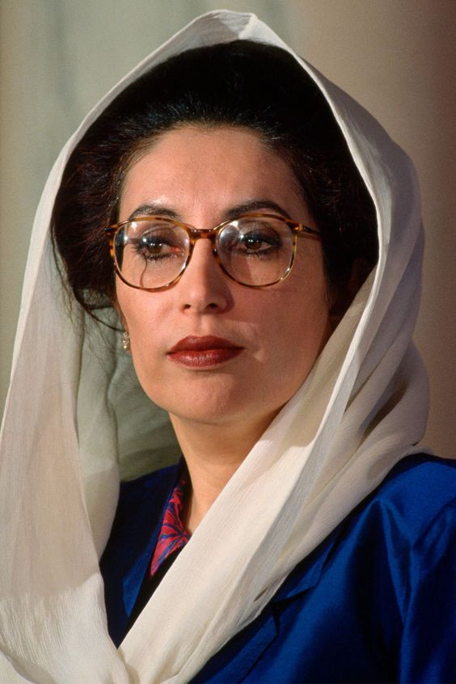
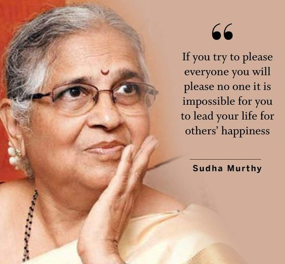
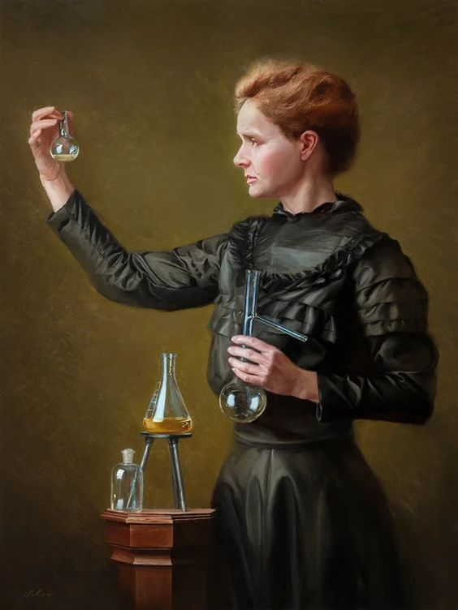
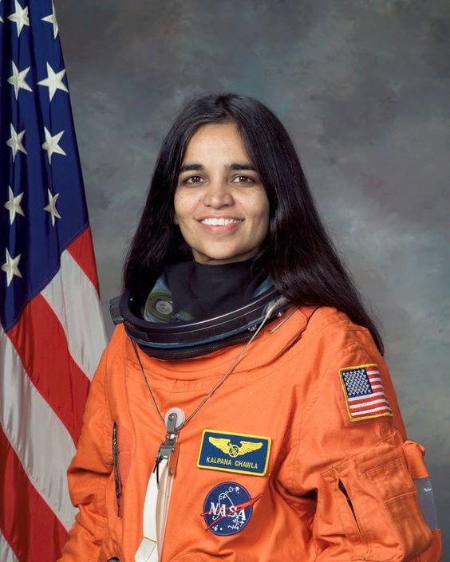
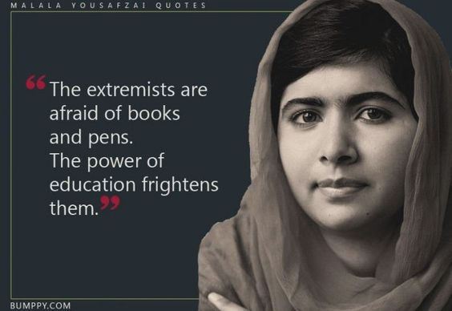
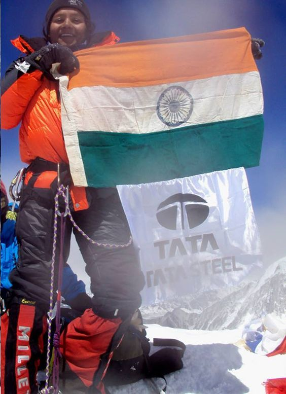

Benazir BhuttoBenazir Bhutto was a Pakistani politician who served as the Prime Minister of Pakistan twice, from 1988 to 1990 and from 1993 to 1996. She was the first woman to head a democratic government in a Muslim-majority country. |
Sudha MurthySudha Murthy is an Indian author, social worker, and philanthropist known for her simple yet powerful writing style that portrays everyday life in India. She is also the Chairperson of the Infosys Foundation and has been actively involved in various philanthropic and social initiatives, particularly in the field of education. |
Marie CurieMarie Curie was a Polish-French physicist and chemist who made pioneering contributions to the fields of radioactivity and nuclear physics. She was the first woman to win a Nobel Prize, and the first person to win two Nobel Prizes in different fields (physics and chemistry). |
Kalpana ChawlaKalpana Chawla was an Indian-American astronaut who became the first woman of Indian origin to go to space. She was one of the seven crew members who tragically died in the Space Shuttle Columbia disaster in 2003. |
Malala YousafzaiMalala Yousafzai is a Pakistani activist for female education and the youngest Nobel Prize laureate. She gained international recognition after surviving a Taliban assassination attempt and became a prominent advocate for girls' education globally. |
Arunima SinhaArunima Sinha is the first female amputee to climb Mount Everest, the highest peak in the world. She is also a former national level volleyball player and a Padma Shri awardee, one of the highest civilian honors in India. |